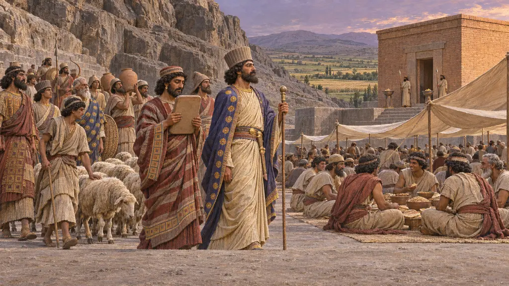
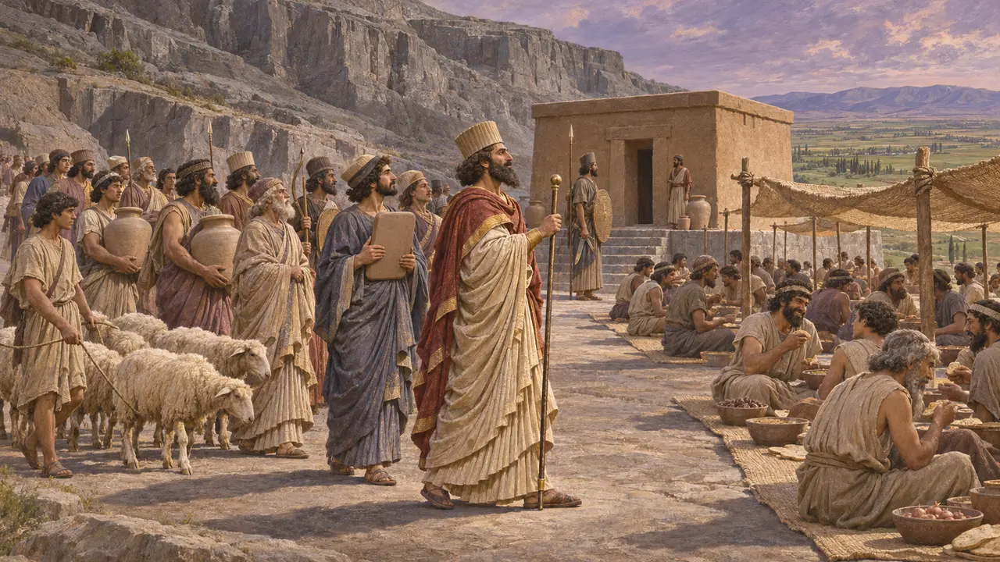

Enciclopedia › Gods and feasts

The gods of Elam
Humban, Napirisha, Inshushinak
Elam was old when Persia was young. Its gods went on being fed in Fars and at Susa under Persian kings, on the same receipts as Ahuramazda.
Nel gioco: Elamite quarters at Parsa and Susa want their own shrine, and the sip feast.

Humban in the tablets
Nelle fontiHumban is the god most often supplied in the Fortification tablets, in texts where Ahuramazda appears only rarely. Henkelman traces him as a god of kingship taken over into the Persian court's own practice.
Henkelman 2008

The sip
Nelle fontiHenkelman reconstructs the sip as an old Elamite feast with a procession and a banquet, kept under the Persians, sometimes with Parnakka, head of the Persepolis administration, himself at its head. The tablets give no calendar, so the game's date is its own.
Henkelman 2008; Achaemenica, "The Persepolis Fortification Archive"
Fonti
- Henkelman 2008
- Potts, The Archaeology of Elam